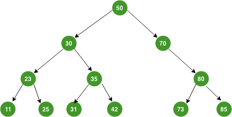
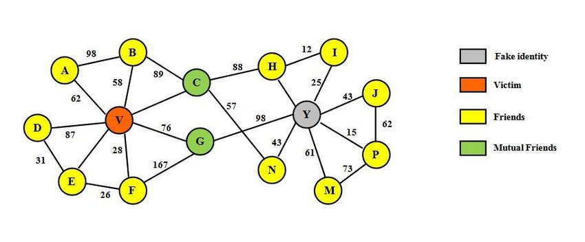

Try this test
Question 1: add these number into max heap step by step
A=(5, 3, 17, 10, 84, 19, 6, 22, 9);
B=(23, 14, 6, 17, 1, 10, 13, 12, 5, 7);
Quest 2: What are these codes ? Utilize the above-mentioned array and arrange it for the best case in each function

Quest 3: given the tree, please delete the node of 70 and rewrite it into balanced tree.

Quest 4: given the graph, write down the adjacency matrix, use 2 kinds of MST which are Prim and Kruskal to find out the minimum value of spanning, use the Dijkstra algorithm to find the shortest path from A to P.
